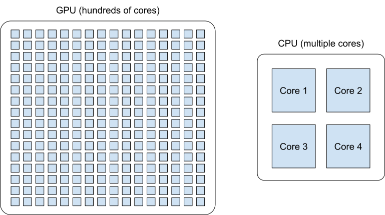
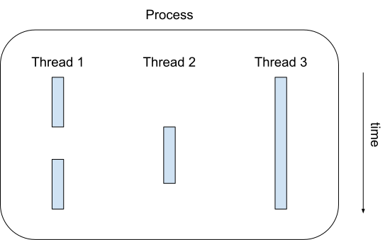
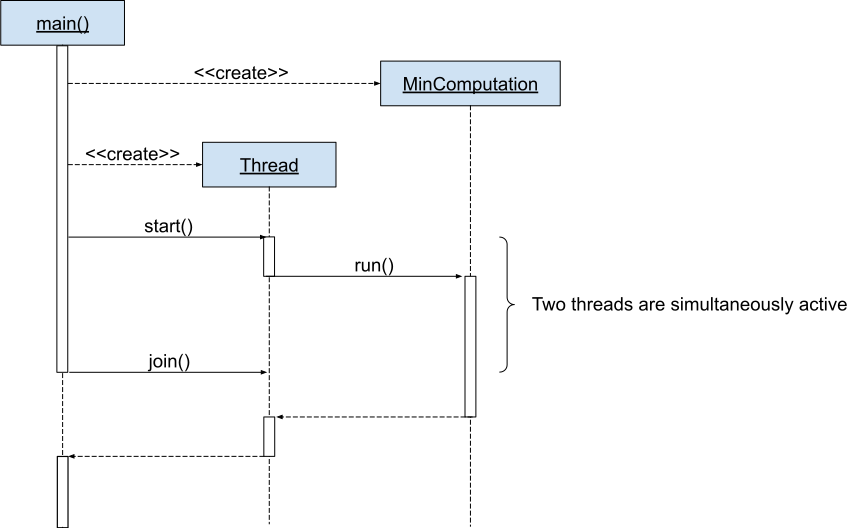
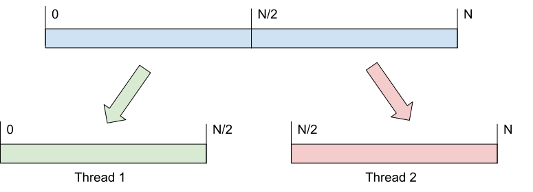
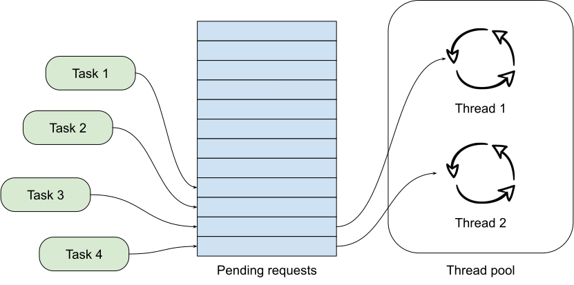

Parallel Programming¶
Parallel programming is a computing technique where multiple tasks are executed simultaneously to achieve faster execution times and to improve resource utilization, compared to sequential execution.
Parallel programming involves breaking down a task into smaller sub-tasks that can be executed independently and concurrently across multiple processors, such as CPUs (central processing units), GPUs (graphics processing units), or distributed computing resources.
Parallel programming is often introduced as a way to optimally take advantage of the multiple computing units that are embedded in modern computers, in order to speed up some computation that takes a lot time.
However, besides this exploitation of multiple computing units to speed up computations, parallel programming also enables the design of responsive user interfaces. Indeed, most GUI (graphical user interface) frameworks are built on the top of a “main event loop” that continuously monitors user interactions and that calls application code to react to those events. If the application code takes too much time to run, the user interface appears to “freeze.” Parallel programming allows to run this applicative logic in the background, hereby preserving an optimal user experience.
This concept of “main event loop” can also be encountered in network applications, where a software must simultaneously serve requests issued by different clients. Thanks to parallel programming, each connection with a client can be handled in the background, leaving the main server able to listen to new connections.
Finally, it may also happen that the design of a whole software can be more naturally modeled using parallel programming than using sequential programming. Think about your personal week agenda: You have a number of distinct tasks of different natures to be achieved during the week, and those tasks only have loose dependencies between them. A large-scale software is likewise: It can generally be decomposed into a set of mostly uncoupled tasks, where each of the individual tasks has a different objective and can be solved using sequential programming. Sequential programming has indeed the advantage of being easier to write, to test, and to correct. Nevertheless, developing the whole software using sequential programming would introduce unnecessary, arbitrary dependencies between the individual tasks, hereby reducing the performance and increasing the complexity of the design. Parallel programming can be a solution to improve such designs.
GPUs vs. CPUs¶
In recent years, there is a growing interest in the exploitation of GPUs to carry on computations that are not related to computer graphics. Indeed, GPUs consist of a massive number of processing units working in parallel that are highly optimized for certain types of computations, especially those involving graphics rendering, heavy matrix operations, numerical simulations, and deep learning.
However, while GPUs are incredibly powerful for certain types of parallel computations, they are not a universal replacement for CPUs. Indeed, CPUs are much more versatile, as they are designed to handle a wide range of tasks, including general-purpose computing, running operating systems, managing I/O operations, executing single-threaded applications, and handling diverse workloads. In contrast, the processing units of GPUs focus on simpler, identical tasks that can be duplicated a large number of times. Furthermore, certain types of tasks, particularly those with sequential dependencies or requiring frequent access to shared data, might not benefit significantly from GPU acceleration. Finally, writing code for GPUs often requires the usage of specialized programming languages or libraries and the understanding of the underlying hardware architecture.
Consequently, in this course, we will only focus on parallel programming on CPUs. It is indeed essential to notice that thanks to hardware evolution, any consumer computer is nowadays equipped with multiple CPU cores (even if they are less numerous than processing units inside a GPU), as depicted on the following picture:
Parallel programming on CPU seeks to leverage the multiple CPU cores available inside a single computer to execute multiple tasks or portions of a single task simultaneously.
Multiprocessing vs. multithreading¶
In computing, a process corresponds to a program that is actively running on the CPU of a computer, along with its current state. A typical operating system allows multiple independent processes to run concurrently on the available CPU cores, hereby providing an environment to achieve parallelism that is referred to as multiprocessing.
A process has its own memory space (including code, data, stack, and CPU registers) and its own resources that are isolated from other processes to prevent unauthorized access and interference. Distinct processes may still communicate with each other through the so-called “interprocess communication” (IPC) mechanisms provided by the operating system. IPCs include files, pipes, message passing, shared memory, and network communications (sockets).
Multiprocessing has two main downsides. Firstly, creating new processes incurs a high overhead due to the need for separate memory allocation and setup for each process. Secondly, because the different processes are isolated from each other, interprocess communications are relatively complex and come at a non-negligible cost.
This motivates the introduction of the concept of a thread. A thread refers to the smallest unit of execution within a process: A thread corresponds to a sequence of instructions that can be scheduled and executed independently by one CPU core. One single process can run multiple threads, as illustrated below:
In this picture, the blue blocks indicate at which moment the different threads are active (i.e., are executing something) within the process. A thread can indeed “fall asleep” while waiting for additional data to process, while waiting for user interaction, or while waiting for the result of a computation done by another thread.
Accordingly, multithreading is a programming technique where a single process is divided into multiple threads of execution. Threads can perform different operations concurrently, such as doing a computation in the background or handling different parts of the application (e.g., keeping the user interface responsive or serving requests from multiple clients).
Importantly, contrarily to processes, threads within the same process are not isolated: They share the same memory space and resources, which allows distinct threads to directly access the same variables and data structures. Threads are sometimes called lightweight processes, because creating threads within a process incurs less overhead compared to creating separate processes.
Summarizing, multithreading tends to be simpler and more lightweight than multiprocessing. This explains why this course will only cover the basics of multithreading in Java.
It is always worth remembering that the fact that different threads do not live in isolation can be error-prone. Multithreading notably requires the introduction of suitable synchronization and coordination mechanisms between threads when accessing shared variables. If not properly implemented, race conditions, deadlocks, and synchronization issues can emerge, which can be extremely hard to identify and resolve.
Also, note that all programmers are constantly confronted with threads. Indeed, even if you never explicitly create a thread by yourself, the vast majority of software frameworks (such as GUI frameworks and a software libraries that deal with network programming or scientific computations) will create threads on your behalf. For instance, in the context of Java-based GUI, both the AWT (Abstract Window Toolkit) and the Swing frameworks will transparently create threads to handle the interactions with the user. Consequently, parallel programming should never be considered as an “advanced feature” of a programming language, because almost any software development has to deal with threads. In other words, even if you do not create your own threads, it is important to understand how to design thread-safe applications that properly coordinate the accesses to the shared memory space.
Threads in Java¶
Java provides extensive support of multithreading.
When a Java program starts its execution, the Java Virtual Machine (JVM) starts an initial thread. This initial thread is called the main thread and is responsible for the execution of the main() method, which is the entry point of most Java applications. Alongside the main thread, the JVM also starts some private background threads for its own housekeeping (most notably the garbage collector).
Additional threads can then be created by software developers in two different ways:
By extending the standard class
Thread. Note that sinceThreadbelongs to thejava.langpackage, noimportdirective is needed. Here is the documentation of theThreadclass: https://docs.oracle.com/javase/8/docs/api/java/lang/Thread.htmlBy implementing the standard interface
Runnablethat is also part of thejava.langpackage: https://docs.oracle.com/javase/8/docs/api/java/lang/Runnable.html
In this course, we will use the second approach. The Runnable interface is quite intuitive:
public interface Runnable {
public void run();
}
This snippet indicates that to create a thread, we first have to define a class providing a run() method that will take care of the computations. Once a concrete class implementing this Runnable interface is available, it can be executed as a thread by instantiating an object of the Thread class.
Using a thread to compute the minimum¶
As an illustration, let us consider the task of computing the minimum value of an array of floating-point numbers. It is straightforward to implement a sequential method to do this computation:
static public void computeMinValue(float values[]) {
if (values.length == 0) {
System.out.println("This is an empty array");
} else {
float minValue = values[0];
for (int i = 1; i < values.length; i++) {
if (values[i] < minValue) {
minValue = values[i];
}
// One could have written more compactly: minValue = Math.min(minValue, values[i]);
}
System.out.println("Minimum value: " + minValue);
}
}
As explained above, if one wishes to run this computation as a background thread, the computeMinValue() method must wrapped inside some implementation of the Runnable interface. But the run() method of the Runnable interface does not accept any parameter, so we cannot directly give the values array as an argument to run(). The trick is to store a reference to the values array inside the class that implements Runnable:
class MinComputation implements Runnable {
private float values[];
public MinComputation(float values[]) {
this.values = values;
}
@Override
public void run() {
computeMinValue(values);
}
}
Our MinComputation class specifies how to compute the minimum of an array. We can evidently run this computation in a purely sequential way as follows:
public static void main(String[] args) {
float values[] = new float[] { -2, -5, 4 };
Runnable r = new MinComputation(values);
r.run();
// This prints: "Minimum value: -5.0"
}
In this example, no additional thread was created besides the main Java thread. But thanks to the fact that MinComputation implements Runnable, it is now possible to compute the minimum in a separate thread:
public static void main(String[] args) {
float values[] = new float[] { -2, -5, 4 };
// First, create a thread that specifies the computation to be done
Thread t = new Thread(new MinComputation(values));
// Secondly, start the thread
t.start();
// ...at this point, the main thread can do other stuff...
System.out.println("This is the main thread");
// Thirdly, wait for the thread to complete its computation
try {
t.join();
} catch (InterruptedException e) {
throw new RuntimeException("Unexpected interrupt", e);
}
System.out.println("All threads have finished");
}
As can be seen in this example, doing a computation in a background thread involves three main steps:
Construct an object of the class
Threadout of an object that implements theRunnableinterface.Launch the thread by using the
start()method ofThread. The constructor ofThreaddoes not automatically start the thread, so we have to do this manually.Wait for the completion of the thread by calling the
join()method ofThread. Note thatjoin()can throw anInterruptedException, which happens if the thread is interrupted by something.
The following sequence diagram (loosely inspired from UML) depicts this sequence of calls:
In this diagram, the white bands indicate the moments where the different objects are executing code. It can be seen that between the two calls t.start() and t.join(), two threads are simultaneously active: the main thread and the computation thread. Note that once the main thread calls t.join(), it falls asleep until the computation thread finishes its work.
In other words, the t.join() call is a form of synchronization between threads. It is always a good idea for the main Java thread to wait for all of its child threads by calling join() on each of them. If a child thread launches its own set of sub-threads, it is highly advised for this child thread to call join() of each of its sub-threads before ending. The Java process will end if all its threads have ended, including the main thread.
Keeping user interfaces responsive¶
The MinComputation example creates one background thread to run a computation on a array. As explained in the introduction, this software architecture can have an interest to keep the user interface responsive during some long computation. To illustrate this interest, consider a GUI application with three buttons using Swing:
The corresponding source code is:
import java.awt.GridLayout;
import java.awt.event.ActionEvent;
import java.awt.event.ActionListener;
import javax.swing.JButton;
import javax.swing.JFrame;
import javax.swing.JOptionPane;
import javax.swing.JPanel;
class SayHello implements ActionListener {
@Override
public void actionPerformed(ActionEvent e) {
JOptionPane.showMessageDialog(null, "Hello world!");
}
}
public class ButtonThread {
public static void main(String[] args) {
JFrame frame = new JFrame("Hello");
frame.setSize(400,200);
frame.setDefaultCloseOperation(JFrame.DISPOSE_ON_CLOSE);
JPanel panel = new JPanel();
panel.setLayout(new GridLayout(3, 1));
frame.add(panel);
JButton button1 = new JButton("Say hello!");
button1.addActionListener(new SayHello());
panel.add(button1);
JButton button2 = new JButton("Run the computation without a thread");
button2.addActionListener(new RunWithoutThread());
panel.add(button2);
JButton button3 = new JButton("Run the computation using a thread");
button3.addActionListener(new RunUsingThread());
panel.add(button3);
frame.setVisible(true);
}
}
Once the user clicks on the “Say hello!” button, a message box appears saying “Hello world!”. Let us now implement the button entitled “Run the computation without a thread”. In the ActionListener observer associated with this button, a long computation is emulated by waiting for 3 seconds:
static public void expensiveComputation() {
try {
Thread.sleep(3000);
} catch (InterruptedException e) {
}
JOptionPane.showMessageDialog(null, "Phew! I've finished my hard computation!");
}
class RunWithoutThread implements ActionListener {
@Override
public void actionPerformed(ActionEvent e) {
expensiveComputation();
}
}
If you try and run this example, if clicking on this second button, it becomes impossible to do any other interaction with the “Say hello!” button. The user interface is totally frozen until the expensiveComputation() method finishes its work.
In order to turn this non-responsive application into a responsive application, one can simply start a thread that runs the expensiveComputation() method:
class Computation implements Runnable {
@Override
public void run() {
expensiveComputation();
}
}
class RunUsingThread implements ActionListener {
@Override
public void actionPerformed(ActionEvent e) {
Thread t = new Thread(new Computation());
t.start();
}
}
This way, even when the computation is running, it is still possible to click on “Say hello!”.
Speeding up the computation¶
Even though starting a background thread can be interesting to improve the responsiveness of an application (as illustrated above), this does not speed up the computation. For instance, the time that is necessary to compute the minimum value using MinComputation is still the same as the purely sequential implementation of method computeMinValue(). In order to reduce the computation time, it is needed to modify the sequential algorithm so that it can exploit multiple CPU cores.
For algorithms working on an array, the basic idea is to split the array in two parts, then to process each of those parts by two distinct threads:
Once the two threads have finished their work, we need to combine their results to get the final result. In our example, the minimum of the whole array is the minimum of the two minimums computed on the two parts.
To implement this solution, the class that implements the Runnable interface must not only receive the values array, but it must also receive the start index and the end index of the block of interest in the array. Furthermore, the class must not print the minimum, but it must provide access to computed minimum value in either block. This is implemented in the following code:
class MinBlockComputation implements Runnable {
private float values[];
private int startIndex;
private int endIndex;
private float minValue;
public MinBlockComputation(float values[],
int startIndex,
int endIndex) {
if (startIndex >= endIndex) {
throw new IllegalArgumentException("Empty array");
}
this.values = values;
this.startIndex = startIndex;
this.endIndex = endIndex;
}
@Override
public void run() {
minValue = values[startIndex];
for (int i = startIndex + 1; i < endIndex; i++) {
minValue = Math.min(values[i], minValue);
}
}
float getMinValue() {
return minValue;
}
}
Note that we now have to throw an exception if the array is empty, because the minimum is not defined in this case. In the previous implementation, we simply printed out the information. This is not an appropriate solution anymore, as we have to provide an access to the computed minimum value.
Thanks to this new design, it is now possible to speed up the computation the minimum using two threads:
public static void main(String[] args) throws InterruptedException {
float values[] = new float[] { -2, -5, 4 };
MinBlockComputation c1 = new MinBlockComputation(values, 0, values.length / 2);
MinBlockComputation c2 = new MinBlockComputation(values, values.length / 2, values.length);
Thread t1 = new Thread(c1);
Thread t2 = new Thread(c2);
t1.start();
t2.start();
t1.join();
t2.join();
System.out.println("Minimum is: " + Math.min(c1.getMinValue(), c2.getMinValue()));
}
The implementation works as follows:
We define the two computations
c1andc2that must be carried on the two parts of the whole array. Importantly, the computations are only defined, the minimum is not computed at this point.We create and launch two threads
t1andt2that will respectively be in charge of calling thec1.run()andc2.run()methods. In other words, it is only after the calls tot1.start()andt2.start()that the search for the minimum begins.Once the two threads have finished their work, the main thread collects the partial results from
c1andc2, then combines these partial results in order to print the final result.
Also note that this version does not catch the possible InterruptedException, but reports it to the caller.
Dealing with empty parts¶
Even though the implementation from the previous section works fine on arrays containing at least 2 elements, it fails if the values array is empty or only contains 1 element. Indeed, in this case, values.length / 2 == 0, which throws the IllegalArgumentException in the constructor of c1. Furthermore, if values.length == 0, the constructor of c2 would launch the same exception.
One could solve this problem by conditioning the creation of c1, c2, t1, and t2 according to the value of values.length. This would however necessitate to deal with multiple cases that are difficult to write and maintain. This problem would also be exacerbated if we decide to divide the array into more than 2 parts to better exploit the available CPU cores.
A simpler, more scalable solution consists in introducing a Boolean flag that indicates whether a result is present for each part of the array. Instead of throwing the IllegalArgumentException in the constructor, this flag would be set to false if the search for minimum is launched on an empty block.
To illustrate this idea, let us consider the slightly more complex problem of computing both the minimum and the maximum values of an array. The first step is to define a class that will hold the result of a computation:
class MinMaxResult {
private boolean isPresent;
private float minValue;
private float maxValue;
private MinMaxResult(boolean isPresent,
float minValue,
float maxValue) {
this.isPresent = isPresent;
this.minValue = minValue;
this.maxValue = maxValue;
}
public MinMaxResult(float minValue,
float maxValue) {
this(true /* present */, minValue, maxValue);
}
static public MinMaxResult empty() {
return new MinMaxResult(false /* not present */, 0 /* dummy min */, 0 /* dummy max */);
}
public boolean isPresent() {
return isPresent;
}
public float getMinValue() {
if (isPresent()) {
return minValue;
} else {
throw new IllegalStateException();
}
}
public float getMaxValue() {
if (isPresent()) {
return maxValue;
} else {
throw new IllegalStateException();
}
}
public void print() {
if (isPresent()) {
System.out.println(getMinValue() + " " + getMaxValue());
} else {
System.out.println("Empty array");
}
}
public void combine(MinMaxResult with) {
if (with.isPresent) {
if (isPresent) {
// Combine the results from two non-empty blocks
minValue = Math.min(minValue, with.minValue);
maxValue = Math.max(maxValue, with.maxValue);
} else {
// Replace the currently absent result by the provided result
isPresent = true;
minValue = with.minValue;
maxValue = with.maxValue;
}
} else {
// Do nothing if the other result is absent
}
}
}
Introducing the MinMaxResult class allows us to cleanly separate the two distinct concepts of the “algorithm to do a computation” and of the “results of the computation.” This separation is another example of a design pattern.
As can be seen in the source code, there are two possible ways to create an object of the MinMaxResult class:
either by using the
MinMaxResult(minValue, maxValue)constructor, which sets theisPresentflag totruein order to indicate the presence of a result,or by using the
MinMaxResult.empty()static method, that creates aMinMaxResultobject with theisPresentflag set tofalsein order to indicate the absence of a result (this is the case of an empty block).
The object throws an exception if trying to access the minimum or the maximum values if the result is absent. It is up to the caller to check the presence of a result using the isPresent() method, before calling getMinValue() or getMaxValue().
Finally, note the presence of the combine() method. This method updates the currently available minimum/maximum values with the results obtained from a different block. The combine() implements the combination of two partial results.
It is now possible to create an implementation of the Runnable interface that leverages MinMaxResult:
class MinMaxBlockComputation implements Runnable {
private float[] values;
private int startIndex;
private int endIndex;
private MinMaxResult result;
public MinMaxBlockComputation(float[] values,
int startIndex,
int endIndex) {
this.values = values;
this.startIndex = startIndex;
this.endIndex = endIndex;
}
@Override
public void run() {
if (startIndex >= endIndex) {
result = MinMaxResult.empty();
} else {
float minValue = values[startIndex];
float maxValue = values[startIndex];
for (int i = startIndex + 1; i < endIndex; i++) {
minValue = Math.min(minValue, values[i]);
maxValue = Math.max(maxValue, values[i]);
}
result = new MinMaxResult(minValue, maxValue);
}
}
MinMaxResult getResult() {
return result;
}
}
The MinMaxBlockComputation class is essentially the same as the MinBlockComputation class defined earlier. It only differs in the way the result is stored: MinBlockComputation uses a float to hold the result of the computation on a block, whereas MinMaxBlockComputation uses an object of the MinMaxResult class. This allows MinMaxBlockComputation not only to report both the minimum and maximum values of part of an array, but also to indicate whether that part was empty or non-empty.
It is now easy to run the computation using two threads in a way that is also correct when the values array contains 0 or 1 element:
public static void main(String[] args) throws InterruptedException {
float values[] = new float[1024];
// Fill the array
MinMaxBlockComputation c1 = new MinMaxBlockComputation(values, 0, values.length / 2);
MinMaxBlockComputation c2 = new MinMaxBlockComputation(values, values.length / 2, values.length);
Thread t1 = new Thread(c1);
Thread t2 = new Thread(c2);
t1.start();
t2.start();
t1.join();
t2.join();
MinMaxResult result = c1.getResult();
result.combine(c2.getResult());
result.print();
}
Optional results¶
The MinMaxResult class was previously introduced as a way to deal with the absence of a result in the case of an empty part of an array. More generally, dealing with the absence of a value is a common pattern in software architectures. For this reason, Java introduces the Optional<T> generic class: https://docs.oracle.com/javase/8/docs/api/java/util/Optional.html
The Optional<T> class does exactly the same stuff as the isPresent Boolean flag that we manually introduced into the MinMaxResult class. The four main operations of Optional<T> are:
of(T t)is a static method that constructs anOptional<T>object embedding the given objecttof classT.empty()is a static method that constructs anOptional<T>object indicating the absence of an object of classT.isPresent()is a method that indicates whether theOptional<T>object contains an object.get()returns the embedded object of classT. If theOptional<T>does not contains an object, an exception is thrown.
Consequently, we could have defined a simplified version of MinMaxResult without the isPresent Boolean flag as follows:
class MinMaxResult2 {
private float minValue;
private float maxValue;
public MinMaxResult2(float minValue,
float maxValue) {
this.minValue = minValue;
this.maxValue = maxValue;
}
public float getMinValue() {
return minValue;
}
public float getMaxValue() {
return maxValue;
}
}
By combining MinMaxResult2 with Optional<T>, the sequential algorithm to be integrated inside the run() method of the Runnable class could have been rewritten as:
import java.util.Optional;
public static Optional<MinMaxResult2> computeMinMaxSequential(float values[],
int startIndex,
int stopIndex) {
if (startIndex >= stopIndex) {
return Optional.empty();
} else {
float minValue = values[startIndex];
float maxValue = values[startIndex];
for (int i = startIndex + 1; i < stopIndex; i++) {
minValue = Math.min(minValue, values[i]);
maxValue = Math.max(maxValue, values[i]);
}
return Optional.of(new MinMaxResult2(minValue, maxValue));
}
}
public static void main(String[] args) {
float values[] = new float[] { -2, -5, 4 };
Optional<MinMaxResult2> result = computeMinMaxSequential(values, 0, values.length);
if (result.isPresent()) {
System.out.println(result.get().getMinValue() + " " + result.get().getMaxValue());
} else {
System.out.println("Empty array");
}
}
This alternative implementation would have been slightly shorter and would have avoided any possible bug in our manual implementation of the isPresent flag.
Exercise
Reimplement the MinMaxBlockComputation class by replacing MinMaxResult with Optional<MinMaxResult2>, and launch threads based on this new class.
Thread pools¶
So far, we have only created two threads, but a modern CPU will typically have at least 4 cores. One could launch more threads to benefit from those additional cores. For instance, the following code would use 4 threads by dividing the array in 4 parts:
public static void main(String[] args) throws InterruptedException {
float values[] = new float[1024];
// Fill the array
int blockSize = values.length / 4;
MinMaxBlockComputation c1 = new MinMaxBlockComputation(values, 0, blockSize);
MinMaxBlockComputation c2 = new MinMaxBlockComputation(values, blockSize, 2 * blockSize);
MinMaxBlockComputation c3 = new MinMaxBlockComputation(values, 2 * blockSize, 3 * blockSize);
MinMaxBlockComputation c4 = new MinMaxBlockComputation(values, 3 * blockSize, values.length);
Thread t1 = new Thread(c1);
Thread t2 = new Thread(c2);
Thread t3 = new Thread(c3);
Thread t4 = new Thread(c4);
t1.start();
t2.start();
t3.start();
t4.start();
t1.join();
t2.join();
t3.join();
t4.join();
MinMaxResult result = MinMaxResult.empty();
result.combine(c1.getResult());
result.combine(c2.getResult());
result.combine(c3.getResult());
result.combine(c4.getResult());
result.print();
}
Note that the definition of c4 uses the size of the array (i.e., values.length) as its stop index, instead of 4 * blockSize, in order to be sure that the last items in the array get processed if the size of the array is not a multiple of 4.
We could continue adding more threads in this way (for instance, 8, 16, 32…). But if we use, say, 100 threads, does that mean that our program will run 100 faster? The answer is no, for at least two reasons:
Obviously, the level of parallelism is limited by the number of CPU cores that are available. If using a CPU with 4 cores, you cannot expect a speed up of more than 4.
Even if threads are lightweight, there is still an overhead associated with the creation and management of a thread. On a modern computer, creating a simple thread (without any extra object) takes around 0.05-0.1 ms. That is approximately the time to calculate the sum from 1 to 100,000.
We can conclude that threads only improve the speed of a program if the tasks for the threads are longer than the overhead to create and manage them. This motivates the introduction of thread pools. A thread pool is a group of threads that are ready to work:
In this drawing, we have a thread pool that is made of 2 threads. Those threads are continuously monitoring a queue of pending tasks. As soon as some task is enqueued and as soon as some thread becomes available, the available thread takes care of this task. Once the task is over, the thread informs the caller that the result of the task is available, then it goes back to listening to the queue, waiting for a new task to be processed.
Thread pools are an efficient way to avoid the overhead associated with the initialization and finalization of threads. It also allows to write user code that is uncoupled from the number of threads or from the number of CPU cores.
Thread pools in Java¶
In Java, three different interfaces are generally combined to create a thread pool:
java.util.concurrent.ExecutorServiceimplements the thread pool itself, including the queue of requests and its background threads: https://docs.oracle.com/javase/8/docs/api/java/util/concurrent/ExecutorService.html.java.util.concurrent.Callable<T>is a generic interface that represents the task to be run. The task must return an object of typeT: https://docs.oracle.com/javase/8/docs/api/java/util/concurrent/Callable.html.java.util.concurrent.Future<T>is a generic interface that represents the result of a task that is in the process of being computed: https://docs.oracle.com/javase/8/docs/api/java/util/concurrent/Future.html.
The Java Development Kit (JDK) provides concrete implementations of ExecutorService and Future, so we (fortunately!) do not have to implement them by ourselves. A concrete thread pool can be created as follows:
ExecutorService executor = Executors.newFixedThreadPool(4 /* numberOfThreads */);
As developers, our sole responsibility consists in choosing the generic type T and in providing an implementation of interface Callable<T> that describes the task to be achieved. The interface Callable<T> looks as follows:
public interface Callable<T> {
public T call();
}
This looks extremely similar to the Runnable interface that we have been using so far! The difference between the Runnable and a Callable<T> interfaces is that the former has no return value, whereas the latter returns a result of type T.
Once a concrete implementation of Callable<T> is available, tasks can be submitted to the thread pool. The pattern is as follows:
Future<T> future1 = executor.submit(new MyCallable(...));
Threads in thread pool are like chefs in the kitchen of a restaurant waiting for orders. If you submit one task to the pool using the call above, one of the chefs will take the task and it will immediately start working on it. You can submit more tasks, but they might have to wait until one chef has finished dealing with its current task:
Future<T> future2 = executor.submit(new MyCallable(...));
Future<T> future3 = executor.submit(new MyCallable(...));
Future<T> future4 = executor.submit(new MyCallable(...));
// ...
You can obtain the result of the futures with their get() method:
T result1 = future1.get();
T result2 = future2.get();
T result3 = future3.get();
T result4 = future4.get();
// ...
If the task is not finished yet, the method get() will wait. This contrast with the executor.submit() method that always returns immediately.
At the end of the program or when you do not need the thread pool anymore, you have to shut it down explicitly to stop all its threads, otherwise the software might not properly exit:
executor.shutdown();
Thread pool for computing the minimum and maximum¶
It is straightforward to turn the MinMaxBlockComputation runnable that was defined above into an callable:
class MinMaxBlockCallable implements Callable<MinMaxResult> {
private float[] values;
private int startIndex;
private int endIndex;
// Removed member: MinMaxResult result;
public MinMaxBlockCallable(float[] values,
int startIndex,
int endIndex) {
this.values = values;
this.startIndex = startIndex;
this.endIndex = endIndex;
}
@Override
public MinMaxResult call() {
if (startIndex >= endIndex) {
return MinMaxResult.empty();
} else {
float minValue = values[startIndex];
float maxValue = values[startIndex];
for (int i = startIndex + 1; i < endIndex; i++) {
minValue = Math.min(minValue, values[i]);
maxValue = Math.max(maxValue, values[i]);
}
return new MinMaxResult(minValue, maxValue);
}
}
}
The only differences are:
The
Runnableinterface is replaced by theCallable<MinMaxResult>interface.The method
run()is replaced by methodcall().The member variable
resultand the methodgetResult()are removed. These elements are replaced by the return value ofcall().
Thanks to the newly defined MinMaxBlockCallable class, it is now possible to use a thread pool:
public static void main(String[] args) throws InterruptedException, ExecutionException {
// Create a thread pool with 4 threads (the thread pool could be shared with other methods)
ExecutorService executor = Executors.newFixedThreadPool(4);
float values[] = new float[1024];
// Fill the array
// Create two tasks that work on two distinct parts of the whole array
Future<MinMaxResult> partialResult1 = executor.submit(new MinMaxBlockCallable(values, 0, values.length / 2));
Future<MinMaxResult> partialResult2 = executor.submit(new MinMaxBlockCallable(values, values.length / 2, values.length));
// Combine the partial results on the two parts to get the final result
MinMaxResult finalResult = MinMaxResult.empty();
finalResult.combine(partialResult1.get()); // This call blocks the main thread until the first part is processed
finalResult.combine(partialResult2.get()); // This call blocks the main thread until the second part is processed
finalResult.print();
// Do not forget to shut down the thread pool
executor.shutdown();
}
This solution looks extremely similar to the previous solution using Runnable and Thread. However, in this code, we do not have to manage the threads by ourselves, and the thread pool could be shared with other parts of the software.
The throws construction is needed because the get() method of futures can possibly throw an InterruptedException (if the future was interrupted while waiting) or an ExecutionException (if there was a problem during the calculation).
Dividing the array into multiple blocks¶
So far, we have divided the array values into 2 or 4 blocks, because we were guided by the number of CPU cores. In practice, it is a better idea to divide the array into blocks of a fixed size to become agnostic of the underlying number of cores. A thread pool can be used in this situation to manage the computations, while preventing the number of threads to exceed the CPU capacity.
To this end, we can create a separate data structure (e.g., a stack or a list) that keeps track of the pending computations by storing the Future<MinMaxResult> objects:
public static void main(String[] args) throws InterruptedException, ExecutionException {
ExecutorService executor = Executors.newFixedThreadPool(4);
float values[] = new float[1024];
// Fill the array
int blockSize = 128;
Stack<Future<MinMaxResult>> pendingComputations = new Stack<>();
int numberOfBlocks; // Contains the ceiling of value.length divided by blockSize
if (values.length % blockSize == 0) {
numberOfBlocks = values.length / blockSize;
} else {
numberOfBlocks = values.length / blockSize + 1;
}
for (int block = 0; block < numberOfBlocks; block++) {
int startIndex = block * blockSize;
int endIndex;
if (block == numberOfBlocks - 1) {
endIndex = values.length;
} else {
endIndex = (block + 1) * blockSize;
}
pendingComputations.add(executor.submit(new MinMaxBlockCallable(values, startIndex, endIndex)));
}
MinMaxResult result = MinMaxResult.empty();
while (!pendingComputations.empty()) {
Future<MinMaxResult> partialResult = pendingComputations.pop();
result.combine(partialResult.get());
}
result.print();
executor.shutdown();
}
Note that the end index of the last block is treated specifically, because values.length might not be an integer multiple of blockSize.
Computing the mean of an array¶
Up to now, this chapter has been almost entirely focused on the task of finding the minimum and maximum values in an array. We have explained how the introduction of the separate class MinMaxResult that is dedicated to the storage of partial results leads to a natural use of thread pools by implementing the Callable<MinMaxResult> interface. An important trick was to define the combine() method that is responsible for combining the partial results obtained from different parts of the array.
How could we compute the mean of the array using a similar approach?
The first thing is to define a class that stores the partial result over a block of the array. One could decide to store only the mean value itself. Unfortunately, this choice would not give enough information to implement the combine() method. Indeed, in order to combine two means, it is necessary to know the number of elements upon which the individual means were computed.
The solution consists in storing the sum and the number of elements in a dedicated class:
class MeanResult {
private double sum; // We use doubles as we might be summing a large number of floats
private int count;
public MeanResult() {
sum = 0;
count = 0;
}
public void addValue(float value) {
sum += value;
count++;
}
public boolean isPresent() {
return count > 0;
}
public float getMean() {
if (isPresent()) {
return (float) (sum / (double) count);
} else {
throw new IllegalStateException();
}
}
public void combine(MeanResult with) {
sum += with.sum;
count += with.count;
}
public void print() {
if (isPresent()) {
System.out.println(getMean());
} else {
System.out.println("Empty array");
}
}
}
Thanks to the MeanResult class, the source code of MinMaxBlockCallable can be adapted in order to define a callable that computes the mean of a block of an array:
class MeanUsingCallable implements Callable<MeanResult> {
private float[] values;
private int startIndex;
private int endIndex;
public MeanUsingCallable(float[] values,
int startIndex,
int endIndex) {
this.values = values;
this.startIndex = startIndex;
this.endIndex = endIndex;
}
@Override
public MeanResult call() {
MeanResult result = new MeanResult();
for (int i = startIndex; i < endIndex; i++) {
result.addValue(values[i]);
}
return result;
}
}
This callable can be used as a drop-in replacement in the source code to compute the minimum/maximum.
Exercise
The classes MinMaxBlockCallable and MeanUsingCallable share many similarities: They both represent a computation that can be done on a part of an array, they both use a dedicated class to store their results, and they both support the operation combine() to merge partial results. However, the source code to compute the minimum/maximum must be adapted for each of them.
Implement a hierarchy of classes/interfaces that can be used to implement a single source code that is compatible with both MinMaxBlockCallable and MeanUsingCallable. Furthermore, validate your approach by demonstrating its compatibility with the computation of the standard deviation.
Hint: Standard deviation can be derived from the variance, which can be computed from the number of elements in the block, from the sum of elements in the block, and from the sum of the squared elements in the block: https://en.wikipedia.org/wiki/Algorithms_for_calculating_variance (cf. naive algorithm).

{kind=link}
{kind=link}
{kind=link}
{kind=link}
{kind=link}
{kind=link}
{kind=link}